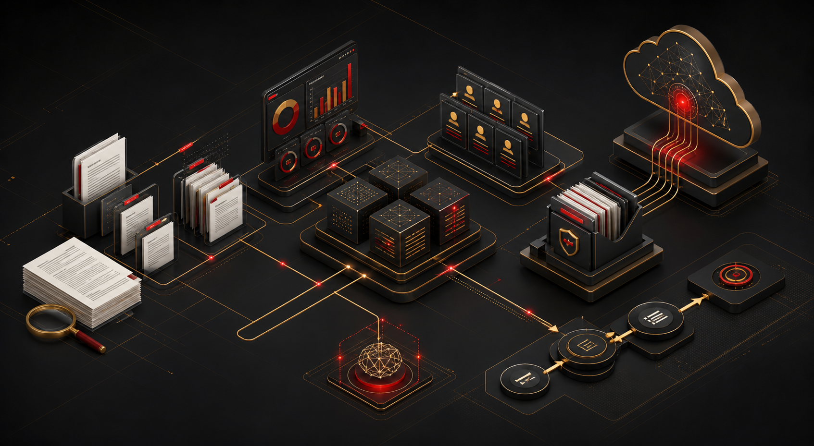

Pencatatan masih tersebar di Excel dan WhatsApp
Legalitas • Digitalisasi • Sistem • AI
Legal Tech Agency
Membangun Organisasi yang Lebih Legal, Modern, dan Efisien
Legalitas, website, sistem operasional, digitalisasi, dan integrasi AI untuk perusahaan, yayasan, UMKM, dan organisasi.
- 5
- Area layanan
- 10
- Langkah implementasi
- End to End
- Pendampingan
Legal-ready
Operational dashboard
AI-assisted workflow
Masalah yang sering muncul
Masih Mengelola Organisasi dengan Cara Manual?
Ketika data, dokumen, dan proses tidak saling terhubung, tim sulit bergerak cepat dan keputusan menjadi lambat.
Dokumen sulit ditemukan
Laporan terlambat dibuat
Data tidak terintegrasi
Website tidak mencerminkan profesionalitas organisasi
Proses kerja terlalu panjang
Tidak ada dashboard monitoring
Teknologi dan AI belum dimanfaatkan secara optimal
Tentang Legal Tech Agency
Bukan Sekadar Website. Kami Membangun Sistem Kerja.
Legal Tech Agency membantu organisasi sejak tahap pendirian, legalitas, pembangunan identitas digital, hingga perancangan sistem operasional dan integrasi AI. Kami memahami kebutuhan klien, mempelajari alur kerja mereka, lalu membangun solusi yang benar-benar relevan dan dapat digunakan.
Legal dan terpercaya
Efisien dan terintegrasi
Berorientasi pada kebutuhan
Didukung teknologi dan AI
Siap dikembangkan
Pendampingan berkelanjutan

Sistem yang saling terhubung
Dari dokumen tersebar menjadi alur kerja yang bisa dipantau.
Legal Tech Agency menyatukan dokumen legal, database, dashboard operasional, arsip digital, dan otomasi AI ke dalam alur kerja yang lebih jelas. Setiap solusi dirancang agar tim Anda dapat bekerja lebih cepat, rapi, dan dapat diaudit.
Audit proses
Dashboard data
Arsip digital
Automasi laporan
Layanan Utama
Solusi dari Legalitas hingga Otomatisasi
Pilih layanan yang paling dekat dengan kebutuhan organisasi Anda, lalu kami bantu susun prioritas implementasinya.
Legalitas dan Pendirian
Pendirian dan penguatan dasar legal organisasi agar siap beroperasi dengan rapi.
- Pendirian PT, CV, yayasan, dan perkumpulan
- OSS, NIB, perubahan data, dan konsultasi legalitas
- Penyusunan dokumen dasar
Website dan Digital Presence
Website profesional yang menjelaskan kredibilitas, layanan, dan cara calon klien menghubungi Anda.
- Company profile, landing page, dan portal organisasi
- Domain, email bisnis, maintenance, dan mobile optimization
- Integrasi formulir dan WhatsApp
Sistem Operasional
Dashboard dan database yang membantu tim mencatat, memantau, dan melaporkan pekerjaan.
- Dashboard keuangan, transaksi, administrasi, dan inventaris
- Database klien, anggota, atau donatur
- Arsip digital dan laporan otomatis
AI dan Otomatisasi
Integrasi AI untuk mempercepat layanan, pencarian pengetahuan, dokumen, dan laporan.
- Chatbot, AI knowledge base, dan AI assistant internal
- Otomatisasi dokumen dan laporan
- Integrasi website, database, WhatsApp, dan workflow
Konsultasi Transformasi Digital
Audit operasional dan rekomendasi teknologi agar perubahan berjalan terarah.
- Pemetaan alur kerja, SOP, dan proses bisnis
- Rekomendasi teknologi dan pelatihan penggunaan sistem
- Pendampingan implementasi dan evaluasi efisiensi
Solusi Berdasarkan Klien
Dirancang Sesuai Bentuk Organisasi
Perusahaan
Legalitas usaha, website profesional, CRM, dashboard keuangan, sistem operasional, AI dan otomatisasi.
Yayasan
Website yayasan, database donatur, dashboard program, laporan keuangan, arsip digital, dan transparansi kegiatan.
UMKM
Legalitas dasar, landing page, pencatatan keuangan, database pelanggan, sistem penjualan, dan otomatisasi pelayanan.
Organisasi
Database anggota, sistem surat, kalender kegiatan, dashboard program, arsip digital, dan laporan kegiatan.
Kantor Profesional
Website profesional, sistem pengelolaan klien, arsip dokumen, knowledge base, monitoring pekerjaan, dan otomatisasi administrasi.
Proses Implementasi
Bagaimana Kami Bekerja
- 01Konsultasi awal
- 02Audit kebutuhan
- 03Analisis masalah
- 04Penyusunan proposal
- 05Perancangan solusi
- 06Pengembangan sistem
- 07Pengujian
- 08Pelatihan pengguna
- 09Serah terima
- 10Maintenance dan evaluasi
Produk Siap Dikembangkan
Modul Digital untuk Operasional yang Lebih Rapi
Dashboard Keuangan
Laporan lambat dan tidak terkonsolidasi
- Ringkasan kas
- Kategori transaksi
- Laporan otomatis
Untuk: Perusahaan, yayasan, UMKM
Diskusikan SolusiSistem Administrasi Yayasan
Administrasi program dan dokumen tersebar
- Data program
- Surat
- Laporan kegiatan
Untuk: Yayasan
Diskusikan SolusiDatabase Klien dan Donatur
Data relasi sulit dilacak
- Profil relasi
- Riwayat komunikasi
- Segmentasi
Untuk: Perusahaan, yayasan
Diskusikan SolusiSistem Arsip Digital
Dokumen sulit ditemukan
- Tag dokumen
- Pencarian cepat
- Kontrol akses
Untuk: Semua organisasi
Diskusikan SolusiDashboard Operasional
Monitoring pekerjaan belum terintegrasi
- Status pekerjaan
- Indikator kinerja
- Notifikasi
Untuk: Perusahaan, kantor profesional
Diskusikan SolusiSistem Monitoring Program
Dampak program sulit dipantau
- Tahapan program
- Indikator
- Laporan
Untuk: Yayasan, organisasi
Diskusikan SolusiAI Knowledge Base
Pengetahuan internal belum terdokumentasi
- Tanya jawab internal
- Rangkuman dokumen
- Sumber rujukan
Untuk: Tim operasional
Diskusikan SolusiChatbot Organisasi
Pertanyaan berulang menyita waktu tim
- FAQ otomatis
- Formulir kebutuhan
- Integrasi WhatsApp
Untuk: Layanan publik
Diskusikan SolusiLiving Laboratory Project
WBS Digital Operations System
WBS digunakan sebagai proyek uji coba nyata untuk pengembangan dashboard keuangan, sistem administrasi, arsip digital, database donatur, website, dan efisiensi operasional.
- Jenis organisasi
- Organisasi sosial dan operasional program
- Masalah awal
- Data program, donatur, dokumen, dan laporan belum berada dalam satu sistem.
- Solusi
- Dashboard keuangan, database donatur, arsip digital, website, dan alur pelaporan.
- Teknologi
- Website, database, dashboard, automasi laporan, dan knowledge base.
- Dampak
- Pencarian data lebih cepat, monitoring lebih jelas, dan dokumentasi operasional lebih tertata.
Keunggulan
Kenapa Memilih Legal Tech Agency?
Menggabungkan hukum, teknologi, dan operasional
Solusi disesuaikan dengan kebutuhan klien
Tidak hanya membuat website
Fokus pada efisiensi dan hasil nyata
Sistem dapat dikembangkan
Pendampingan dari awal sampai implementasi
Dokumentasi dan SOP yang jelas
Dukungan maintenance
Memahami kebutuhan perusahaan dan yayasan
Integrasi AI dan otomatisasi
Audit Operasional
Temukan Langkah Digital yang Tepat.
Ceritakan proses yang masih manual, kendala tim, dan sistem yang sudah digunakan. Kami membantu menentukan prioritas perbaikan sesuai kebutuhan organisasi Anda.
Diskusikan Audit Operasional- 01
Pahami Kondisi Saat Ini
Petakan alur kerja, dokumen, dan data yang paling penting.
- 02
Tentukan Prioritas
Pilih perbaikan yang paling relevan dengan kebutuhan tim.
- 03
Susun Arah Implementasi
Diskusikan ruang lingkup, tahapan, dan pendampingan.
Paket Layanan
Pilihan Awal yang Bisa Disesuaikan
Harga disusun setelah kebutuhan, ruang lingkup, dan prioritas implementasi dipetakan.
Legal Starter
Untuk usaha atau organisasi yang baru dibangun.
- Konsultasi legalitas
- Pendirian badan usaha atau lembaga
- OSS dan NIB
- Dokumen dasar
Digital Presence
Untuk organisasi yang membutuhkan identitas digital.
- Website profesional
- Domain
- Email bisnis
- Landing page
- Integrasi WhatsApp
Operational System
Untuk organisasi yang ingin merapikan sistem kerja.
- Dashboard
- Database
- Pencatatan
- Laporan
- Arsip digital
Full Business Setup
Untuk klien yang membutuhkan solusi dari awal sampai operasional.
- Legalitas
- Website
- Sistem operasional
- SOP
- Integrasi AI
- Maintenance
FAQ
Pertanyaan yang Sering Diajukan
Apa itu Legal Tech Agency?
Legal Tech Agency adalah partner transformasi organisasi yang menggabungkan legalitas, teknologi, sistem operasional, digitalisasi, dan AI.
Apakah Legal Tech merupakan kantor hukum?
Legal Tech Agency bukan kantor hukum. Layanan yang membutuhkan kewenangan profesi dijalankan bersama notaris, advokat, konsultan pajak, atau profesional berizin yang relevan.
Apakah dapat membantu pendirian PT atau yayasan?
Kami membantu pemetaan kebutuhan dan koordinasi pendirian melalui profesional berizin yang relevan.
Apakah sistem dapat disesuaikan?
Sistem dirancang berdasarkan kebutuhan, alur kerja, dan prioritas organisasi.
Berapa lama proses pengerjaan?
Durasi ditentukan berdasarkan ruang lingkup dan kebutuhan. Tahapan dan jadwal dibahas dalam proposal sebelum pekerjaan dimulai.
Apakah tersedia layanan maintenance?
Tersedia dukungan pemeliharaan, evaluasi, pengembangan fitur, dan pendampingan penggunaan sesuai kesepakatan.
Bagaimana kebutuhan keamanan data dibahas?
Kebutuhan akses, pengelolaan dokumen, dan keamanan data dibahas saat pemetaan solusi agar sesuai dengan operasional organisasi.
Apakah melayani klien di luar Tangerang?
Konsultasi dan pendampingan dapat dilakukan secara online untuk klien di berbagai wilayah.
Apakah website dan sistem dapat dikembangkan?
Ruang lingkup pengembangan berikutnya dapat disepakati sesuai pertumbuhan dan kebutuhan organisasi.
Apakah tersedia integrasi AI?
Integrasi AI dapat dirancang untuk knowledge base, chatbot, pencarian dokumen, dan otomatisasi alur kerja sesuai kebutuhan.
Kontak Resmi
Mulai Percakapan. Temukan Solusinya.
Hubungi PIC Legal Tech Agency untuk mendiskusikan kebutuhan dan langkah berikutnya bagi organisasi Anda.
- WhatsApp PIC resmi+62 851-8176-0072
- Alamat kantorJl. Irigasi Sipon RT. 03/03 No. 107, RT.003/RW.003, Poris Plawad Utara, Kec. Cipondoh, Kota Tangerang, Banten 15141
- Jam operasionalSenin-Jumat, 09.00-17.00 WIB